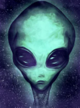

Теории заговора НЛО
Являются подмножеством теории заговора которые утверждают, что различные правительства
и политики во всем мире, в частности, Правительство Соединенных Штатов, скрывают
доказательства того, что неопознанные летающие объекты контролируются нечеловеческим
разумом или построены с использованием инопланетных технологий.
Пол Хеллиер и бывший министр обороны Канады ,Эдгар Митчелл и Гордон Купер астронавты
(бывший директор космических программ Министерства обороны Израиля),Хаим Эшед (первый директор ЦРУ),
израильский бригадный генерал Роско Х. Хилленкеттер глава и начальник штаба обороны Великобритании),
американский вице-адмирал НАТО (бывший Лорд Хилл-НортонБританский адмирал Барри ГолдуотерСреди лиц,
которые публично заявляли, что доказательства НЛО замалчиваются, сенатор Соединенных Штатов .
Помимо их свидетельств и отчетов, они не представили никаких доказательств, подтверждающих их
заявления и утверждения. По данным . Помимо их свидетельств и отчетов, они не представили никаких
доказательств, подтверждающих их заявления и утверждения. По данным Комитета по скептическому расследованию,
существует мало или вообще нет доказательств в их поддержку, несмотря на значительные исследования
по этому вопросу, проведенные неправительственными научными учреждениями.
Ученые-религиоведы выявили несколько новых религиозных движений среди сторонников теорий заговора НЛО,
в первую очередь Небесные Врата, Нация ислама и Саентология.
В ноябре 1944 года пилоты, летевшие ночью над Западной Европой, начали сообщать о быстро
движущихся круглых светящихся объектах, следующих за их самолетами. Объекты, прозванные "Фриц
файерболами" или Foo Fighters, по-разному описывались как огненные и светящиеся красным, белым
или оранжевым. Несмотря на первоначальные подозрения, что объекты могут быть секретным немецким
оружием, дальнейшее расследование показало, что немецкие и японские пилоты сообщали о похожих наблюдениях.
В 1946 и 1947 годах поступали многочисленные сообщения о так называемых ракетах-призраках, появляющихся над
скандинавскими странами, в первую очередь Швецией, которые затем распространились на другие европейские страны.
Летающие диски и летающие тарелки
Наблюдение НЛО Кеннетом Арнольдом произошло 24 июня 1947 года, когда частный пилот
Кеннет Арнольд заявил, что видел цепочку из девяти блестящих неопознанных летающих
объектов, пролетевших мимо Маунт-Рейнир со скоростью, которую Арнольд оценил как минимум
в 1200 миль в час (1932 км / ч). Это было первое наблюдение в Соединенных Штатах после
Второй мировой войны, которое получило общенациональное освещение в новостях, и считается
первым в современную эпоху наблюдений НЛО, включая многочисленные сообщения о наблюдениях в
течение следующих двух-трех недель. Описание объектов Арнольдом также привело к тому, что
пресса быстро ввела термины "летающая тарелка" и "летающий диск" в качестве популярных
описательных терминов для НЛО. В течение нескольких недель, последовавших за рассказом
Арнольда в июне 1947 года, из США и со всего мира поступило по меньшей мере несколько сотен
сообщений о подобных наблюдениях, в большинстве из которых описывались объекты в форме
блюдца. Наблюдение экипажем United Airlines еще девяти дискообразных объектов над
Айдахо 4 июлявероятно, они получили больше освещения в газетах, чем первоначальное
наблюдение Арнольда, и открыли шлюзы для освещения в СМИ в последующие дни.
После своего наблюдения 24 июня Кеннет Арнольд стал знаменитым "практически в одночасье".
С Арнольдом связался Рэймонд А. Палмер, редактор fringe / научно-фантастического журнала Amazing Stories
который попросил Арнольда расследовать историю двух жителей гавани в Такоме, у которых, по сообщениям,
были фрагменты "летающей тарелки". Палмер отправил 200 долларов на финансированиерасследование.
29 июля Арнольд взял интервью у служащего порта, который утверждал, что один из объектов "начал извергать
то, что казалось тысячами газет откуда-то изнутри его центра. Эти газеты, которые оказались белым типом очень
легкого металла, упали на землю ". Портовый служащий утверждал, что корабль испускал вещество, напоминающее
лавовые камни, которое упало на его лодку, сломав руку рабочему и убив собаку. Портовый служащий
также утверждал, что позже к нему подошел человек в темном костюме и сказал не говорить об инциденте.
Арнольд взял интервью у Фреда Крисмана, сотрудника харбормана, который сообщил, что обнаружил обломки на
острове Мори и стал свидетелем необычного корабля. Крисман показал Арнольду обломки "белого металла",
которые он интерпретировал как обычные и несовместимые с описанием Харбормана.
Арнольд связался с ВВС, и два офицера вскоре прибыли для расследования. Офицеры провели интервью,
собрали фрагменты и вылетели на своем самолете, чтобы вернуться на базу. Рано утром 1 августа оба офицера
погибли, когда бомбардировщик B-25, который они пилотировали, разбился недалеко от Келсо, штат Вашингтон, на обратном пути.в Калифорнию.
В 1956 году офицер ВВС Эдвард Дж. Руппельт пришел к выводу, что "Вся тайна острова Мори была мистификацией.
Первая, возможно, вторая по значимости и самая грязная мистификация в истории НЛО". Руппельт заметил:
Правительство всерьез подумывало о судебном преследовании этих людей. В последнюю минуту, после разговора
с двумя мужчинами, было решено, что мистификация была безобидной шуткой, которая разрослась как гриб, и что
в гибели двух человек и B-25 нельзя напрямую обвинять двух мужчин.
Мистификация была освещена современной прессой. Фрэнк Скалли сообщит о событиях в своей книге 1950
года "За летающими тарелками", а Арнольд подробно расскажет о своем опыте в своей книге 1952 года "Пришествие тарелок".